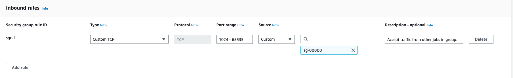
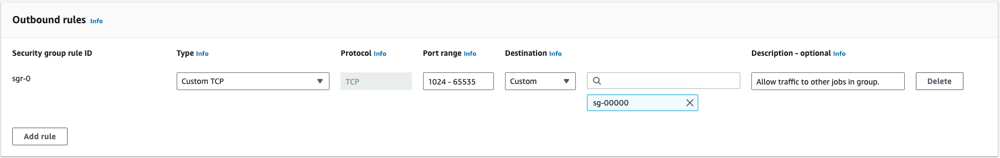

In computationally demanding analysis projects, statisticians and data scientists asynchronously deploy long-running tasks to distributed systems, ranging from traditional clusters to cloud services. The crew.aws.batch package extends the mirai-powered ‘crew’ package with a worker launcher plugin for AWS Batch. Inspiration also comes from packages mirai, future, rrq, clustermq, and batchtools.
Installation
| Type | Source | Command |
|---|---|---|
| Release | CRAN | install.packages("crew.aws.batch") |
| Development | GitHub | remotes::install_github("wlandau/crew.aws.batch") |
| Development | R-universe | install.packages("crew.aws.batch", repos = "https://wlandau.r-universe.dev") |
Documentation
Please see https://wlandau.github.io/crew.aws.batch/ for documentation, including a full function reference and usage tutorial.
Prerequisites
crew.aws.batch launches AWS Batch jobs to run crew workers. This comes with a set of special requirements:
- Understand AWS Batch and its official documentation.
- The job definition must have Docker-compatible container image with R and
crew.aws.batchinstalled. You may wish to inherit from an existing rocker image. - In the compute environment, the security group must permit all inbound and outbound TCP traffic within itself.1 The controller and the workers must run in this security group so they can communicate within the firewalled local network.2 If your security group ID is
sg-00000and belongs to VPCvpc-00000, then your inbound and outbound rules may look something like this:


client <- paws.compute::ec2()
groups <- client$describe_security_groups(GroupIds = "sg-00000")
str(groups$SecurityGroups[[1L]])
#> List of 8
#> $ Description : chr "Allow TCP traffic on ephemeral ports"
#> $ GroupName : chr "self-pointing-group"
#> $ IpPermissions :List of 1
#> ..$ :List of 7
#> .. ..$ FromPort : num 1024
#> .. ..$ IpProtocol : chr "tcp"
#> .. ..$ IpRanges : list()
#> .. ..$ Ipv6Ranges : list()
#> .. ..$ PrefixListIds : list()
#> .. ..$ ToPort : num 65535
#> .. ..$ UserIdGroupPairs:List of 1
#> .. .. ..$ :List of 7
#> .. .. .. ..$ Description : chr "Accept traffic from other jobs in group."
#> .. .. .. ..$ GroupId : chr "sg-00000"
#> .. .. .. ..$ GroupName : chr(0)
#> .. .. .. ..$ PeeringStatus : chr(0)
#> .. .. .. ..$ UserId : chr "CENSORED"
#> .. .. .. ..$ VpcId : chr(0)
#> .. .. .. ..$ VpcPeeringConnectionId: chr(0)
#> $ OwnerId : chr "CENSORED"
#> $ GroupId : chr "sg-00000"
#> $ IpPermissionsEgress:List of 1
#> ..$ :List of 7
#> .. ..$ FromPort : num 1024
#> .. ..$ IpProtocol : chr "tcp"
#> .. ..$ IpRanges : list()
#> .. ..$ Ipv6Ranges : list()
#> .. ..$ PrefixListIds : list()
#> .. ..$ ToPort : num 65535
#> .. ..$ UserIdGroupPairs:List of 1
#> .. .. ..$ :List of 7
#> .. .. .. ..$ Description : chr "Allow traffic to other jobs in group."
#> .. .. .. ..$ GroupId : chr "sg-00000"
#> .. .. .. ..$ GroupName : chr(0)
#> .. .. .. ..$ PeeringStatus : chr(0)
#> .. .. .. ..$ UserId : chr "CENSORED"
#> .. .. .. ..$ VpcId : chr(0)
#> .. .. .. ..$ VpcPeeringConnectionId: chr(0)
#> $ Tags : list()
#> $ VpcId : chr "vpc-00000"Usage
First, create a controller object. Also supply the names of your job queue and job definition, as well as any optional flags and settings you may need.
library(crew.aws.batch)
controller <- crew_controller_aws_batch(
name = "my_workflow", # for informative job names
workers = 16,
tasks_max = 2, # to avoid reaching wall time limits
seconds_launch = 600, # to allow a 10-minute startup window
seconds_idle = 60, # to release resources when they are not needed
processes = NULL, # See the "Asynchronous worker management" section below.
aws_batch_job_definition = "YOUR_JOB_DEFINITION_NAME",
aws_batch_job_queue = "YOUR_JOB_QUEUE_NAME"
)
controller$start()At this point, usage is exactly the same as basic crew. The push() method submits tasks and auto-scales AWS Batch workers to meet demand.
controller$push(name = "do work", command = do_work())The pop() method retrieves available tasks.
controller$pop()
#> # A tibble: 1 × 11
#> name command result seconds seed error trace warni…¹ launc…² worker insta…³
#> <chr> <chr> <list> <dbl> <int> <chr> <chr> <chr> <chr> <int> <chr>
#> 1 do work … do_work… <int> 0 1.56e8 NA NA NA 79e71c… 1 7686b2…
#> # … with abbreviated variable names ¹warnings, ²launcher, ³instanceRemember to terminate the controller when you are done.
controller$terminate()Asynchronous worker management
HTTP requests to submit and terminate jobs may take up to 1 or 2 seconds, and this overhead may be burdensome if there are many workers. To run these requests asynchronously, set the processes argument of crew_controller_aws_batch() to the number of local mirai daemons you want to process the requests. These processes will start on controller$start() and end on controller$terminate() or when your local R session ends. controller$launcher$async$errors() shows the most recent error messages generated on launch or termination for all workers.
Troubleshooting
processes = NULL disables async and makes launch/termination errors immediate and easier to see. You may also wish to set options(paws.log_level = 3L) to increase the verbosity of paws messages.
Thanks
-
Charlie Gao created
miraiandnanonextand graciously accommodated the complicated and demanding feature requests that madecrewand its ecosystem possible. - Thanks to Henrik Bengtsson, David Kretch, Adam Banker, and Michael Schubert for edifying conversations about cloud computing in R.
Code of Conduct
Please note that the crew project is released with a Contributor Code of Conduct. By contributing to this project, you agree to abide by its terms.
Citation
citation("crew.aws.batch")
To cite package 'crew.aws.batch' in publications use:
Landau WM (????). _crew.aws.batch: A Crew Launcher Plugin for AWS
Batch_. R package version 0.0.0.9000,
https://github.com/wlandau/crew.aws.batch,
<https://wlandau.github.io/crew.aws.batch/>.
A BibTeX entry for LaTeX users is
@Manual{,
title = {crew.aws.batch: A Crew Launcher Plugin for AWS Batch},
author = {William Michael Landau},
note = {R package version 0.0.0.9000,
https://github.com/wlandau/crew.aws.batch},
url = {https://wlandau.github.io/crew.aws.batch/},
}If you already know the TCP port you will supply to
portargument ofcrew_controller_aws_batch(), you can restrict the port range to only use that port number.↩︎Please read about the risks and keep TLS encryption turned on (default:
tls = crew_tls(mode = "automatic")). Please understand and comply with all the security policies of your organization.↩︎